السؤال كايسول واش قبل ما ينطلق السائق، خاصو يراقب الإغلاق المحكم لنظام الأمان.
نظام الأمان هنا كايشمل جميع الروابط والوصلات لي كتربط القاطرة بالمقطورة، بحال:
الكروشي (نظام الربط الأساسي). سلاسل أو كابلات الأمان الإضافية. وصلات الهواء (لفران ديال المقطورة). الوصلات الكهربائية (للأضواء والإشارات). كل هاد العناصر خاصها تكون مربوطة ومغلقة بإحكام باش تضمن سلامة السير وتجنب أي انفصال أو عطب أثناء القيادة.
إذن، الجواب الصحيح هو:
نعم (خاص السائق يراقب الإغلاق المحكم لنظام الأمان قبل الانطلاق).
السؤال 2
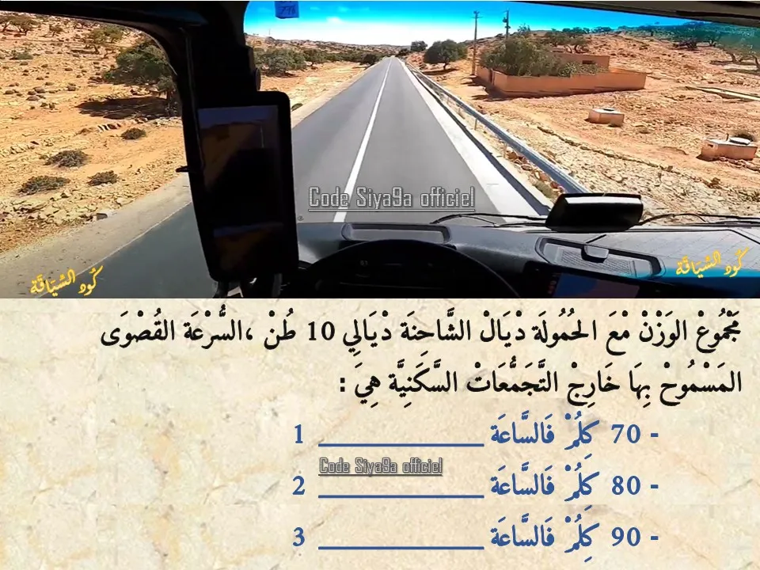
الجواب الصحيح: 3
السؤال كايسول على السرعة القصوى المسموح بها لخارج التجمعات السكنية لشاحنة الوزن ديالها مع الحمولة 10 طن. الجواب الصحيح هو : 3
السؤال 3
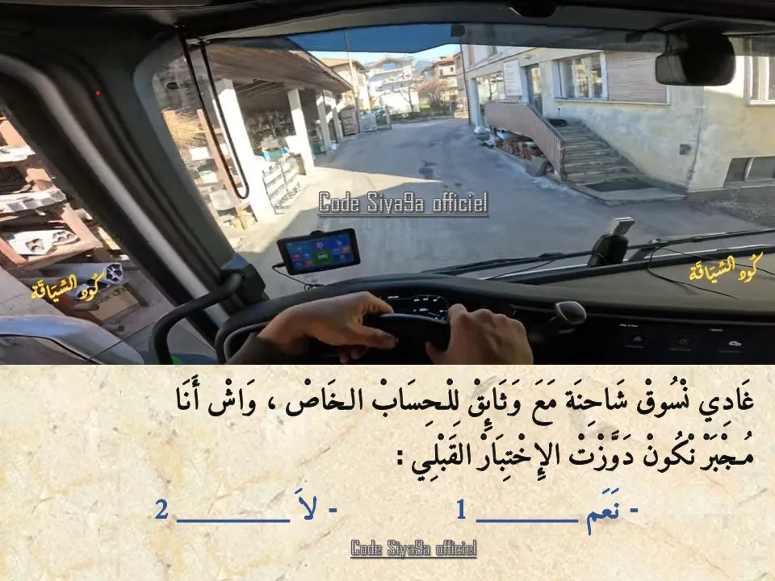
الجواب الصحيح: 1
الإجابة الصحيحة في السياق المغربي (حسب مدونة السير وقوانين النقل):
نعم، السائق مجبر على أن يكون قد أجرى "الاختبار القبلي" (أو ما يعرف بالتحقق اليومي من حالة المركبة) قبل قيادة الشاحنة، سواء كانت للحساب الخاص أو النقل العمومي.
السؤال 4
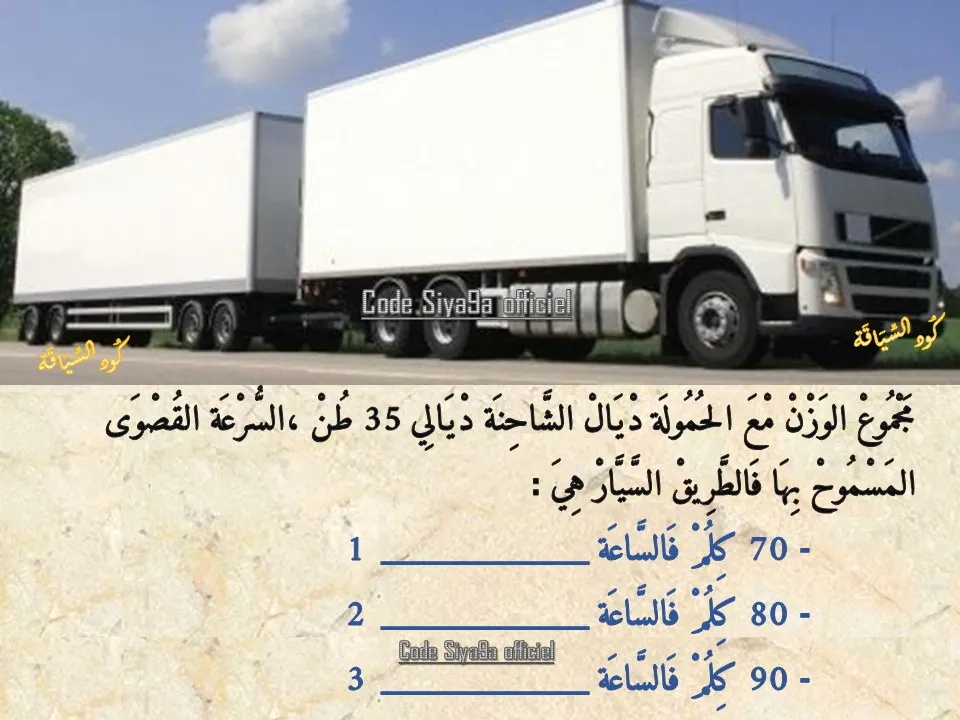
الجواب الصحيح: 2
السؤال كايسول على السرعة القصوى المسموح بها لخارج التجمعات السكنية لشاحنة الوزن ديالها مع الحمولة 35 طن. الجواب الصحيح هو : 2
السؤال 5
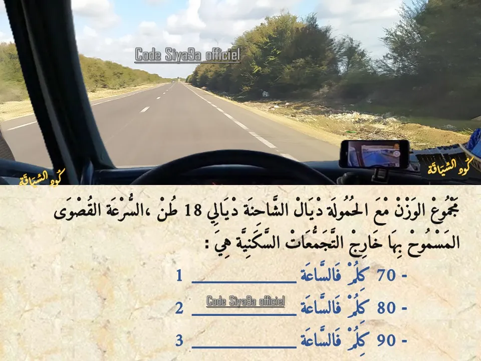
الجواب الصحيح: 2
السؤال كايسول على السرعة القصوى المسموح بها لخارج التجمعات السكنية لشاحنة الوزن ديالها مع الحمولة 18 طن. الجواب الصحيح هو : 2
السؤال 6
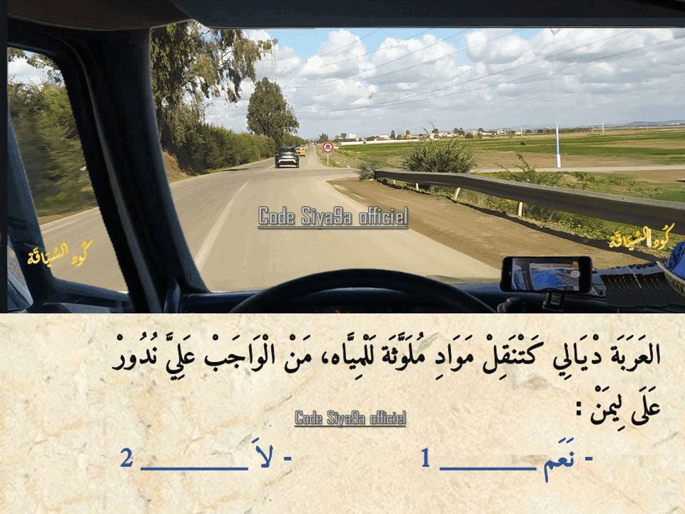
الجواب الصحيح: 1
علامة منع دائرية باللون الأحمر مع رمز الشاحنة وبجانبها رمز يوضح طبيعة المواد الممنوعة لي هي مواد ملوثة للماء ، يعني ممنوع تكمل السير القدام ، و حيت كاين غير طريق على ليمن ، خاصك تدور على اليمينلعلامة كتفرض عليك. 🏞️⚠️➡️
السؤال 7
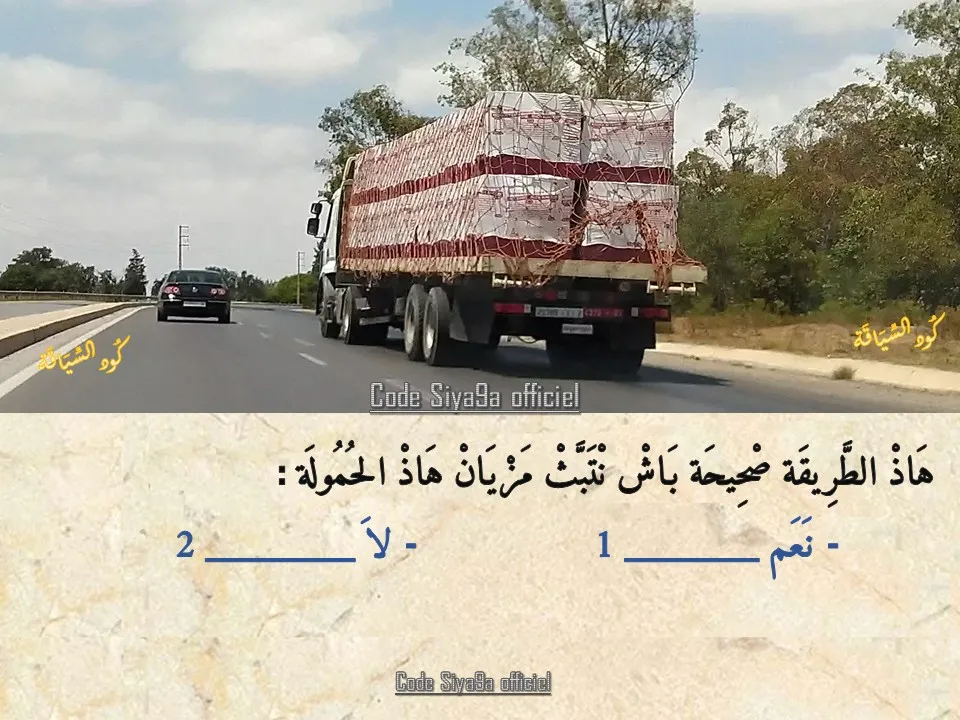
الجواب الصحيح: 1
هاد الطريقة لي مستعملين (الشباك والحبال) كتعتبر طريقة صحيحة باش تشد السلعة، حيت كتوفر التثبيت الضروري باش ماتطيحش ف الطريق. 🚛🔒
السؤال 8
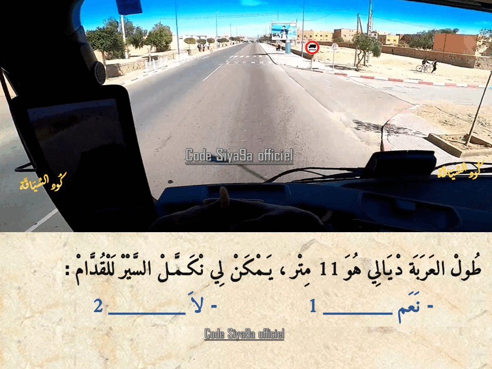
الجواب الصحيح: 2
الجواب: لا ⛔ الشرح المختصر: العلامة كاتقول ممنوع تدوز الشاحنات اللي طولها فايت 10 متر. وانت طول عربتك 11 متر، يعني خاصك تبدل الطريق! 🛣️❌
السؤال 9
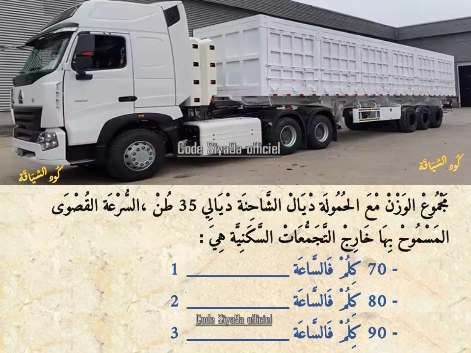
الجواب الصحيح: 1
"فوق 19 طن" ، السرعة خارج المدينة هي "70 كلم/ساعة". الجواب الصحيح: 70 كلم/الساعة 🛣️ الخلاصة: الشاحنة ديالك فيها 35 طن، وفالمدونة ديال السير، أي كاميو فايت 19 طن ماخاصوش يفوت 70 كلم/الساعة فالطريق خارج المدينة. 🚛💨
السؤال 10
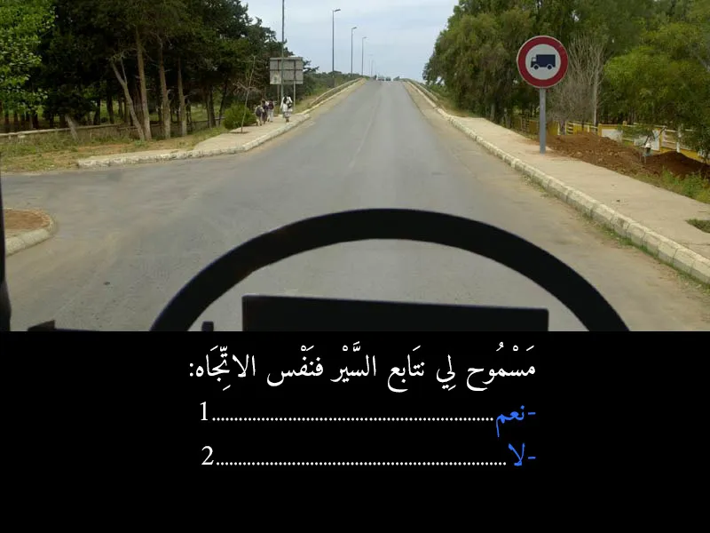
الجواب الصحيح: 2
تظهر علامة مرورية دائرية باللون الأحمر وبداخلها صورة شاحنة. هذه العلامة هي علامة منع في قانون السير المغربي، ومعناها الواضح والصريح هو "ممنوع مرور الشاحنات"⛔.
السؤال 11
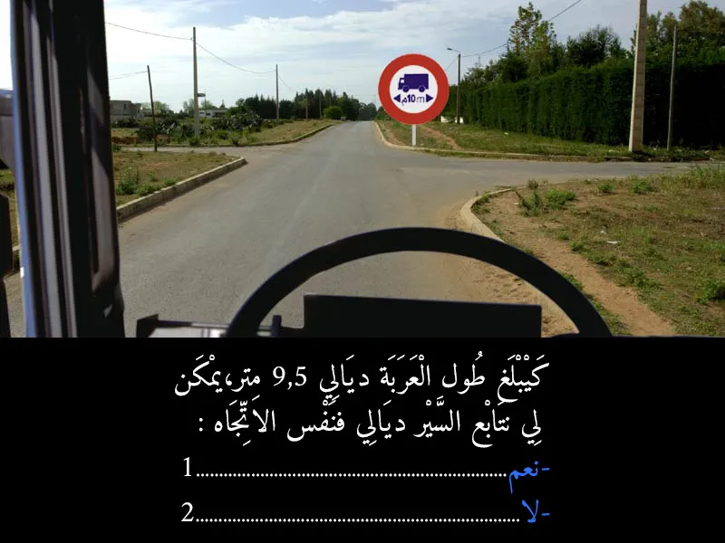
الجواب الصحيح: 1
"كيبلغ طول العربة ديالي 9,5 متر، يمكن لي نتابع السير ديالي فنفس الاتجاه:"
الجواب: نعم ✅ الخلاصة بالدارجة: العلامة كاتمنع الشاحنات لي طولها كيفوت 10 متر. بما أن طول عربتك 9.5 متر (لي هو قل من 10 متر)، إذن مسموح ليك تكمل طريقك القدام. 🛣️👍
السؤال 12
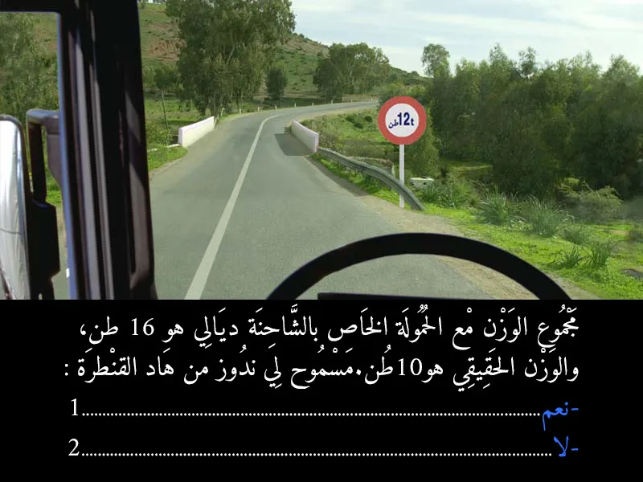
الجواب الصحيح: 2
العلامة كاتقول ممنوع دوز شي حاجة فايتة 12 طن. واخا الوزن الحقيقي ديال كاميوك هو 10 طن، بما أن الوزن الإجمالي المسموح به ديال الشاحنة ديالك هو 16 طن (لي هو فايت 12 طن)، فهادشي كايرجعها ممنوعة من الدوزان من هاد القنطرة. 🌉🚫
السؤال 13
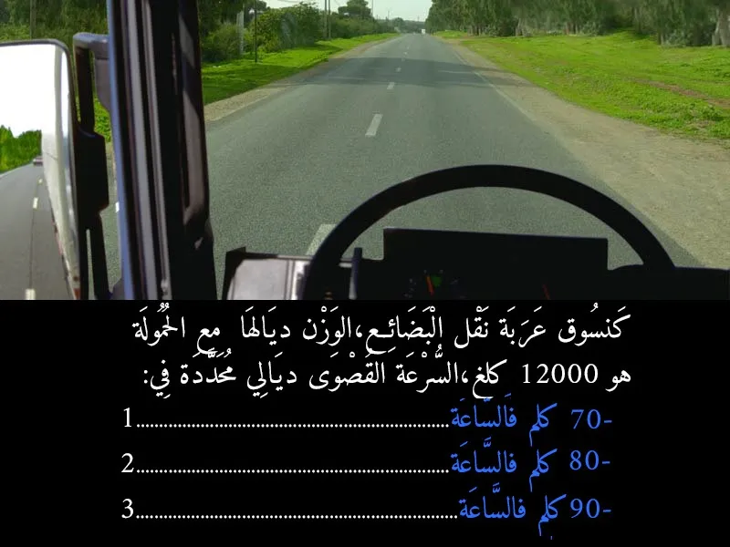
الجواب الصحيح: 3
الجواب يعتمد على نوع الطريق الذي تسير عليه المركبة. بما أن وزن الشاحنة هو 12 أطنان، فهي تقع ضمن فئة المركبات التي يتجاوز وزنها 3.5 طن ولا يتجاوز 12 طن. 🚚
إليك السرعات القصوى المسموح بها لهذه المركبة:
داخل المدن (التجمعات العمرانية): 60 كم/ساعة 🏘️ خارج المدن (الطرق العادية): 90 كم/ساعة 🛣️ في الطريق السيار (الأوتوستراد): 100 كم/ساعة
السؤال 14
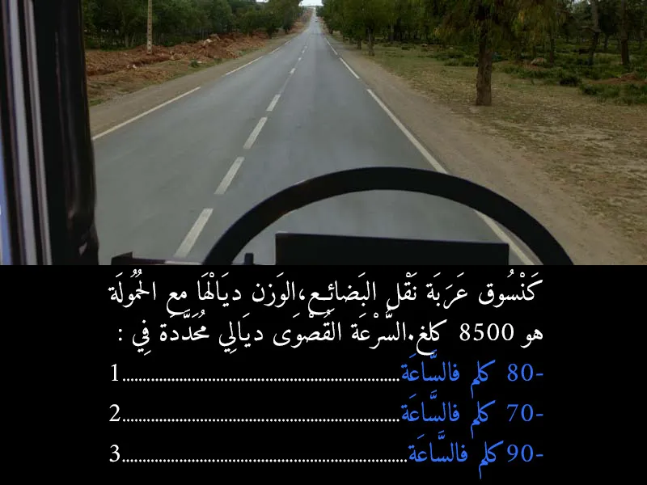
الجواب الصحيح: 3
الجواب يعتمد على نوع الطريق الذي تسير عليه المركبة. بما أن وزن الشاحنة هو 8 أطنان، فهي تقع ضمن فئة المركبات التي يتجاوز وزنها 3.5 طن ولا يتجاوز 12 طن. 🚚
إليك السرعات القصوى المسموح بها لهذه المركبة:
داخل المدن (التجمعات العمرانية): 60 كم/ساعة 🏘️ خارج المدن (الطرق العادية): 90 كم/ساعة 🛣️ في الطريق السيار (الأوتوستراد): 100 كم/ساعة
السؤال 15
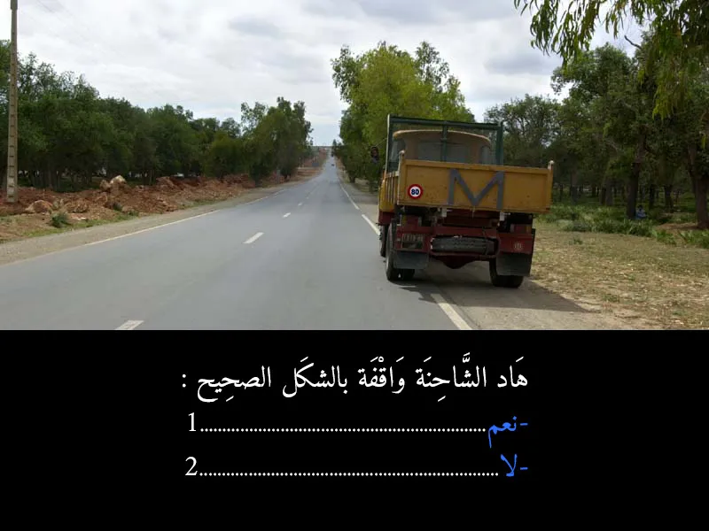
الجواب الصحيح: 2
بما أن جزء من الشاحنة باقي داخل المسار ديال الطريق، فالوقوف ديالها ماشي صحيح وكايشكل خطر على المرور. 🚧🚛
السؤال 16
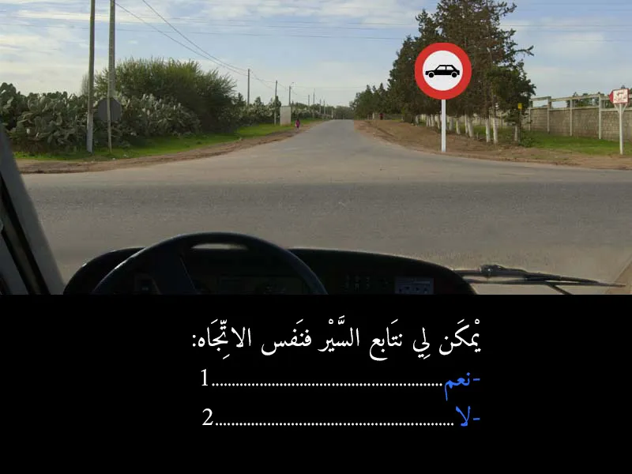
الجواب الصحيح: 2
العلامة كاتقول ممنوع مرور جميع العربات ذات المحركات 🚫🚗. يعني مايمكنش ليك تكمل القدام فهاد الطريق بأي عربة عندها موطور (إلا الموطورات ذات عجلتين).
السؤال 17
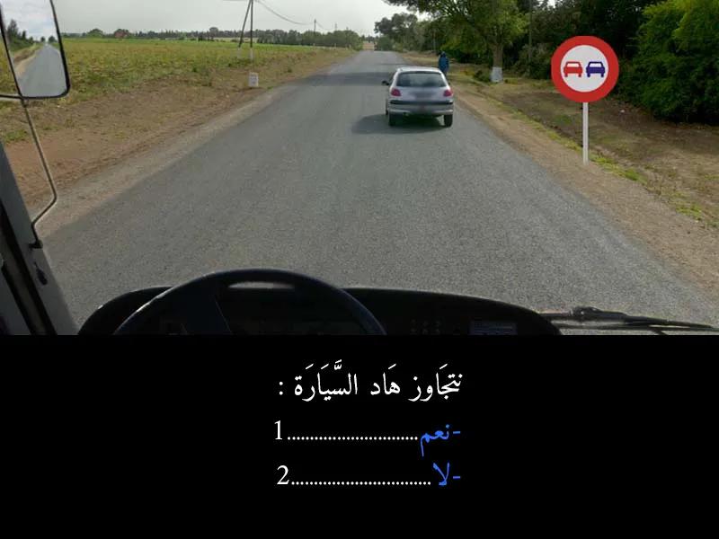
الجواب الصحيح: 2
العلامة كاتقول ممنوع التجاوز على جميع العربات ذات المحركات باستثناء الدراجات النارية ذات عجلتين 🚫🚘. يعني مايمكنش ليك دوبل هاد السيارة.
السؤال 18
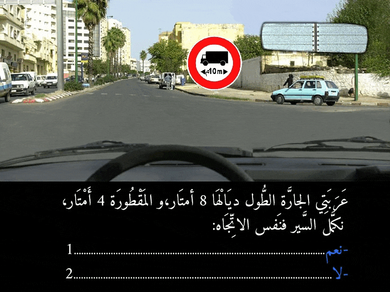
الجواب الصحيح: 2
طول مجموع العربات ديالك هو 12 متر (8+4=12). العلامة كاتمنع المرور على العربات اللي طولها كيفوت 10 متر 📏🚫. يعني مايمكنش ليك تكمل فهاد الطريق.
السؤال 19
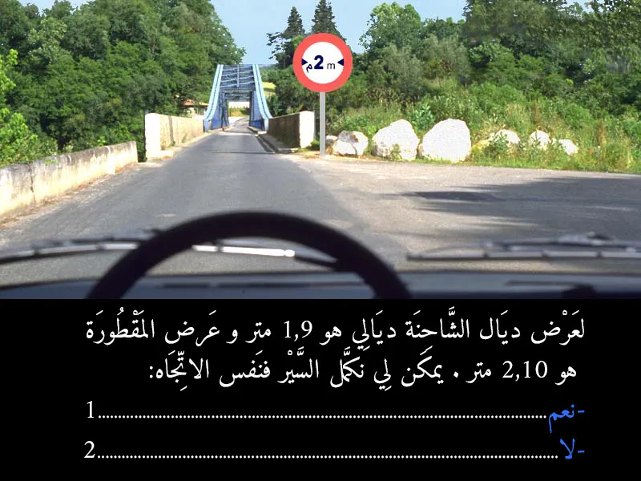
الجواب الصحيح: 2
عرض المقطورة ديالك هو 2.10 متر. العلامة كاتقول ممنوع دوز شي حاجة فايتة 2 متر في العرض ↔️🚫. يعني مايمكنش ليك تكمل فهاد الطريق.
السؤال 20
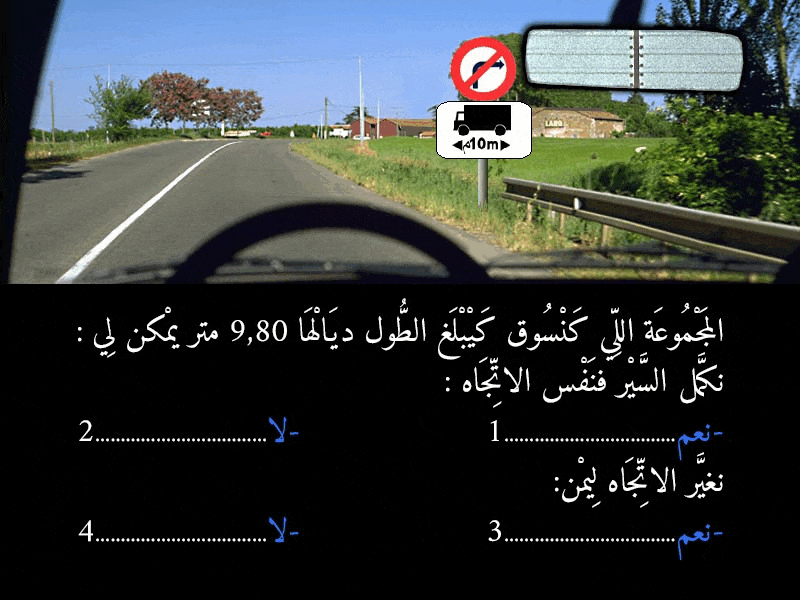
الجواب الصحيح: 1 و 3
العلامة كاتمنع المرور على العربات اللي طولها كيفوت 10 متر 📏🚫. بما أن طول المجموعة ديالك هو 9.80 متر (أقل من 10 متر)، إذن مسموح ليك تكمل طريقك القدام. 🛣️👍
السؤال 21
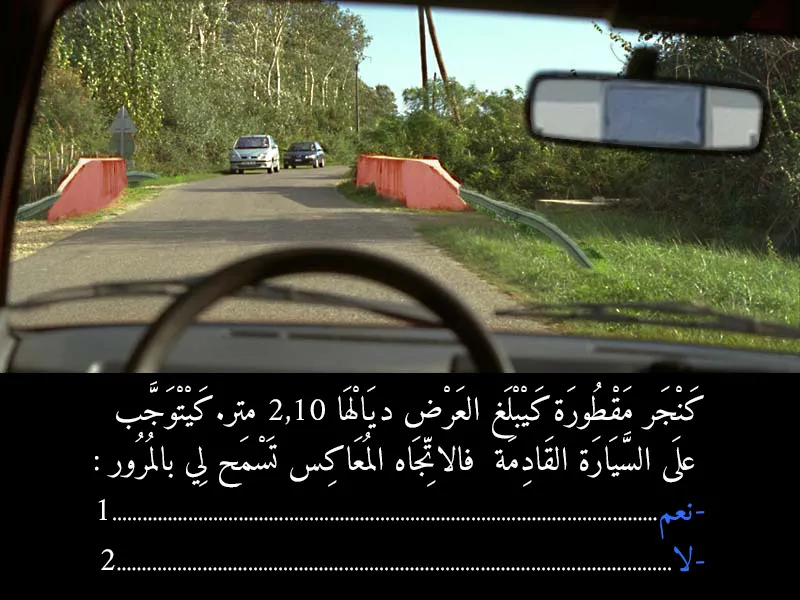
الجواب الصحيح: 2
بما أنك كتجر مقطورة وعرضها كبير نسبيا (2.10 متر) مقارنة بالسيارة العادية، وفي قنطرة ضيقة، فالقاعدة العامة كاتقول أن العربة الكبيرة أو اللي عندها صعوبة فالمناورة كاتكون ما عندهاش الأولوية. فهذا كيعني أن السيارة اللي جاية من قدام هي اللي عندها الأولوية في العبور من القنطرة الضيقة. 🌉🚘